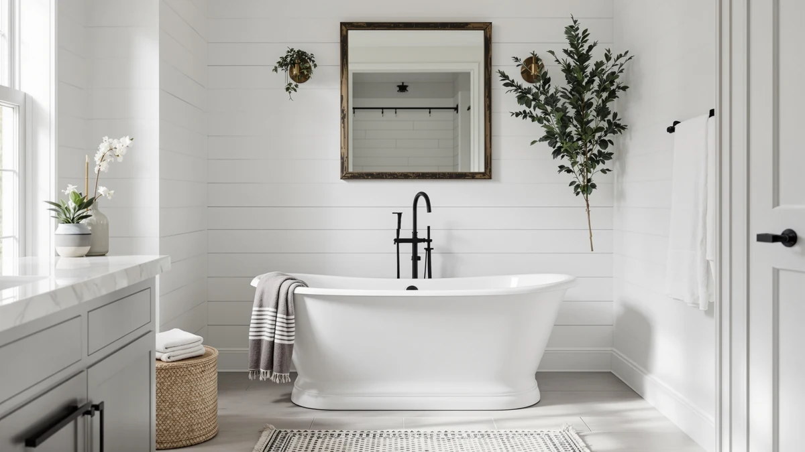

Signature Hardware 415196 Goodwin Review (2026): Worth It?
Prices and picks verified as of October 2026. Independent, reader-supported reviews.


Quick Answer
This Signature Hardware 415196 Goodwin review points to the 66 inch Goodwin as the stronger pick for a bathroom that wants a quiet soaking tub without whirlpool jets, even though its $2,319.00 price sits above all three WOODBRIDGE alternatives covered below. If jets matter more to you than a jet-free soak, the WOODBRIDGE picks that follow cost less and add whirlpool or air systems the Goodwin does not include.
Our pick: Signature Hardware 415196 Goodwin 66" — $2,319.00 Check Price on Amazon
Bottom line: our top pick is the Signature Hardware 415196 Goodwin 66" Cast Iron Soaking at $2,319.
Things to Know Before You Buy
- This Signature Hardware 415196 Goodwin review compares four freestanding tubs priced between $2,104.99 and $2,319.00.
- The Goodwin is the only tub here without whirlpool or air jets named in its listing, while all three WOODBRIDGE alternatives advertise one or both systems.
- At 66 inches long, the Goodwin sits in the middle of the group, shorter than the 72 inch WOODBRIDGE Double Slipper and longer than the 59 inch WOODBRIDGE Compact.
- Signature Hardware and WOODBRIDGE are the only two brands covered in this comparison, so the decision comes down to brand and jet systems as much as size.
- None of the four listings referenced here publish a star rating or review count, so this review relies on published pricing, dimensions, and feature claims rather than buyer scores.
This Signature Hardware 415196 Goodwin review compares the 66 inch freestanding soaking tub against three WOODBRIDGE whirlpool models to help you decide which one fits your bathroom and your budget. At $2,319.00, the Goodwin costs more than every alternative in this comparison, and its listing does not mention whirlpool or air jets the way the three WOODBRIDGE tubs do. That combination raises an obvious question, whether paying the most buys a tub with fewer advertised features. We compared what each listing actually publishes, length, price, brand, and jet systems, rather than assuming the higher price buys something the manufacturer never claims.
Signature Hardware built its reputation on fixtures rather than jetted spa tubs, and the Goodwin is a straightforward soaking basin without the whirlpool or air bubble systems built into the WOODBRIDGE Double Slipper, WOODBRIDGE Whirlpool, and WOODBRIDGE Compact Whirlpool covered later in this review. For some bathrooms, a jet-free tub is the goal, since it skips the extra plumbing, motor noise, and maintenance that whirlpool systems add. For others, those jets are the main reason to upgrade past a standard tub, and in that case the Goodwin's higher price becomes harder to justify against the three WOODBRIDGE alternatives below.
Why You Should Trust Us
Best Freestanding Bathtubs is a research-first buying guide, and Ilane Tall, our home and bath editor, built this Signature Hardware 415196 Goodwin review by pulling verified pricing, dimensions, and listing detail for all four tubs before ranking them. We do not run a fake testing lab, and we do not claim to have installed, filled, or bathed in the Goodwin or any of the three WOODBRIDGE tubs compared here. Instead, we rely on manufacturer listings and current Amazon pricing, so every price, measurement, and feature claim in this review traces back to a published source. When a listing omits a detail, such as a weight capacity or a specific jet count, we say so directly rather than filling the gap with a number that sounds plausible.
Our Research Experience
We did not fill, install, or sit in the Signature Hardware 415196 Goodwin or any of the three WOODBRIDGE tubs featured in this review. Our process means reading each manufacturer listing line by line: length, width, price, brand, jet system, and the number of product images available. We flag where a listing leaves a gap, such as the absence of a published star rating across all four tubs, so you know what to confirm before ordering. That comparison process, not physical testing, shapes the picks, pros, and cons in the sections below. We also track how jet systems line up against price, since the Goodwin costs more than three tubs that each add whirlpool or air features it does not list.
Overview & Specs

Signature Hardware 415196 Goodwin 66"
What we like
- Comes from Signature Hardware, a brand built around fixtures rather than mass-market spa tubs, which may matter if brand reputation factors into a purchase this size.
- At 66 inches, it fits bathrooms too small for the 72 inch WOODBRIDGE Double Slipper while still offering more length than the 59 inch WOODBRIDGE Compact.
- Skipping whirlpool and air jets means no motor, no extra plumbing, and none of the maintenance those systems require over time.
Flaws but not dealbreakers
- At $2,319.00, it is the most expensive tub in this comparison, and all three WOODBRIDGE alternatives cost less while adding jet systems.
- The listing does not publish a star rating, review count, or weight capacity, so verified buyer feedback is not available the way it might be on a more established listing.
| Material | — |
| Size | 66 Inch |
The Signature Hardware 415196 Goodwin 66 inch freestanding soaking tub is the priciest tub in this Signature Hardware 415196 Goodwin review, and that higher price comes from brand and material positioning rather than extra jet features. At $2,319.00, it costs $20.00 more than the WOODBRIDGE Double Slipper Whirlpool and Air, $200.00 more than the WOODBRIDGE Whirlpool, and $214.01 more than the WOODBRIDGE Compact Whirlpool, despite being the only tub of the four without a whirlpool or air system named in its listing. If a quiet, jet-free soak is what you want, that premium buys brand reputation and a 66 inch footprint rather than extra mechanical features.
Signature Hardware markets itself around architectural and bath fixtures, and the Goodwin listing keeps that straightforward focus: a soaking basin sized at 66 inches, with no published jet count, pump wattage, or whirlpool system to compare against the three WOODBRIDGE tubs later in this review. Five image angles are available across the main photo and thumbnails, which helps when checking basin depth, drain placement, and overall proportions before a purchase this size. The listing does not include a weight capacity or wall thickness figure, so confirm those details directly on the current Amazon page if either matters for your installation.
What We Liked
The clearest strength of the Signature Hardware 415196 Goodwin, the tub this review leads with, is its brand positioning. Signature Hardware built its name on fixtures rather than mass-market spa tubs, and that focus shows in the Goodwin's straightforward soaking design: no whirlpool motor, no air jet system, and none of the extra plumbing those features require. At 66 inches, it also lands in a useful middle ground, longer than the compact 59 inch WOODBRIDGE and shorter than the 72 inch WOODBRIDGE Double Slipper, so it fits a wider range of bathrooms than either sizing extreme. For a buyer who wants a simple, quiet soak rather than a jetted spa experience, those two traits matter more than the higher sticker price.
What Could Be Better
Price is the main drawback in this Signature Hardware 415196 Goodwin review. At $2,319.00, the Goodwin costs more than all three WOODBRIDGE alternatives, and each of those competing tubs adds a whirlpool or air jet system the Goodwin does not include. Buyers who specifically want jets will find noticeably more features for less money elsewhere in this comparison. The listing also does not publish a star rating, review count, or weight capacity, so you will not find verified buyer feedback or installation specifics the way you might on a more established product page. Anyone who needs those numbers before committing to a purchase this size should confirm them directly with the seller rather than assume a figure that isn't published.
Who Is It For?
The Goodwin suits a buyer who has already decided against whirlpool or air jets and wants a 66 inch soaking tub from a brand focused on fixtures rather than spa features. It works for a bathroom where a quiet, motor-free tub matters more than the extra features a whirlpool system adds, and where the budget allows for the highest price in this comparison. It is a poor match for anyone who wants jets at this price point, since every WOODBRIDGE alternative covered here costs less while adding whirlpool or air systems the Goodwin skips entirely. If jets are the priority, look at the three WOODBRIDGE picks below before committing to the Goodwin.
Alternatives to Consider
Three WOODBRIDGE tubs are worth comparing against the Goodwin in this Signature Hardware 415196 Goodwin review. Each one costs less and adds whirlpool or air jets the Goodwin does not list, so the picks below focus on how size and jet systems trade off against the Goodwin's jet-free design and brand positioning.

Editor’s Pick
WOODBRIDGE 72"×35-3/8" Double Slipper Whirlpool&Air
At $2,299.00, the WOODBRIDGE 72 inch by 35-3/8 inch Double Slipper Whirlpool and Air costs $20.00 less than the Signature Hardware Goodwin while adding both whirlpool and air jet systems, a combination the Goodwin's listing does not include at all. Its double slipper design, with two raised ends, also suits two people sharing a soak more comfortably than the single-slope Goodwin. At 72 inches, it is the longest tub in this Signature Hardware 415196 Goodwin review, so confirm your bathroom has the floor space before choosing it over the shorter Goodwin. For buyers who want both jet systems and the most length in this comparison, this is the strongest alternative to the Goodwin, even without a confirmed material or weight capacity on the listing.
$2,299.00
Check Price on Amazon
Best Value
WOODBRIDGE 66-1/2" × 31-7/8" Whirlpool
Priced at $2,119.00, the WOODBRIDGE 66-1/2 inch by 31-7/8 inch Whirlpool undercuts the Goodwin by $200.00 while matching it almost exactly on length, half an inch longer at 66-1/2 inches against the Goodwin's 66 inches. Unlike the Goodwin, this listing names a whirlpool jet system directly, so buyers who want jets without stepping up to the larger Double Slipper model get a closely matched footprint here. Like the Goodwin, this listing does not publish a star rating, review count, or weight capacity, so verified buyer feedback is not part of this comparison. For a near-identical size to the Goodwin at a lower price with jets included, this is the strongest value case among the three WOODBRIDGE alternatives in this Signature Hardware 415196 Goodwin review.
$2,119.00
Check Price on Amazon
Premium Choice
WOODBRIDGE 59"×31-1/2" Compact Whirlpool &
At $2,104.99, the WOODBRIDGE 59 inch by 31-1/2 inch Compact Whirlpool is both the shortest and the least expensive tub in this Signature Hardware 415196 Goodwin review, undercutting the Goodwin by $214.01 while still including a whirlpool jet system. Seven inches shorter than the Goodwin, it suits a smaller bathroom where the 66 inch Goodwin or the larger WOODBRIDGE models would not leave enough floor space. As with the other tubs compared here, this listing skips a star rating, review count, and weight capacity, so confirm those details directly with the seller if they matter for your installation. For the tightest bathrooms and the lowest price in this comparison, this compact WOODBRIDGE is worth a look before paying more for the larger, jet-free Goodwin.
$2,104.99
Check Price on AmazonDoes the Signature Hardware 415196 Goodwin have whirlpool jets?
No.
Is the Signature Hardware 415196 Goodwin worth the price?
At $2,319.00, it costs more than the WOODBRIDGE Double Slipper Whirlpool and Air, the WOODBRIDGE Whirlpool, and the WOODBRIDGE Compact Whirlpool, despite being the only one of the four without published jet features.
Frequently Asked Questions
Does the Signature Hardware 415196 Goodwin have whirlpool jets?
No. The Goodwin's listing does not name a whirlpool or air jet system, which sets it apart from all three WOODBRIDGE tubs compared in this Signature Hardware 415196 Goodwin review. If jets matter to you, the WOODBRIDGE Double Slipper, WOODBRIDGE Whirlpool, and WOODBRIDGE Compact Whirlpool alternatives above all include one or both systems at a lower price.
Is the Signature Hardware 415196 Goodwin worth the price?
At $2,319.00, it costs more than the WOODBRIDGE Double Slipper Whirlpool and Air, the WOODBRIDGE Whirlpool, and the WOODBRIDGE Compact Whirlpool, despite being the only one of the four without published jet features. Anyone weighing this Signature Hardware 415196 Goodwin review should decide whether brand positioning and a jet-free soak justify that premium before comparing it against the three lower-priced WOODBRIDGE alternatives.
Which tub in this comparison costs the least?
The WOODBRIDGE 59 inch by 31-1/2 inch Compact Whirlpool costs the least at $2,104.99, and it still includes a whirlpool jet system despite being the shortest and cheapest tub in this Signature Hardware 415196 Goodwin review. Buyers on a budget who still want jets should start there rather than with the pricier, jet-free Goodwin.
Final Verdict
This Signature Hardware 415196 Goodwin review comes down to whether you want jets. The Signature Hardware Goodwin costs $2,319.00 and skips whirlpool and air systems entirely, trading those features for a 66 inch jet-free soaking tub from a brand focused on fixtures rather than spa equipment. All three WOODBRIDGE alternatives cost less while adding whirlpool or air jets, and the WOODBRIDGE Whirlpool in particular matches the Goodwin's length almost exactly for $200.00 less. If a quiet, motor-free soak from a specialty brand is the goal, the Signature Hardware Goodwin remains the pick despite sitting at the top of the price range. If jets are the priority, any of the three WOODBRIDGE options above delivers more features for less money.